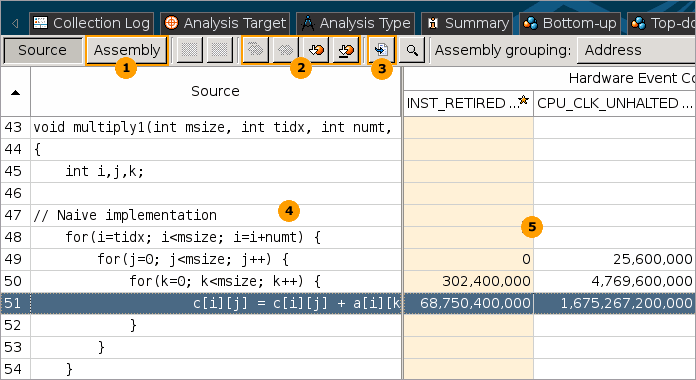

You identified a hotspot function with a number of hardware
issues. Double-click the
multiply1
function in the
Bottom-up window to open the source code:
You identified a hotspot function with a number of hardware
issues. Double-click the
multiply1
function in the
Bottom-up window to open the source code:

The table below explains some of the features available in the Source pane when viewing the event-based sampling analysis data.
|
Assembly button to toggle in the Assembly pane that displays assembly instructions for the selected function. |
|
Hotspot navigation buttons to switch between code lines that took a long time to execute. |
|
Source file editor button to open and edit your code in the default editor. |
Source pane displaying the source code of the application, which is available if the function symbol information is available. The hottest code line is highlighted. The source code in the Source pane is not editable. |
|
Values per hardware event attributed to a particular code line. By default, the data is sorted by the Clockticks event count. Focus on the events that constitute the metrics identified as performance-critical in the Bottom-up window. To identify these events, mouse over the metric column header in the Bottom-up window. Drag-and-drop the columns to organize the view for your convenience. VTune Amplifier remembers yours settings and restores them each time you open the viewpoint. |
When you drill-down from the grid to the source view, the VTune Amplifier automatically highlights the code line that has the highest event count. In the Source pane for the multiply1 function, you see that line 51 took the most of the Clockticks event samples during execution. This code section multiplies matrices in the loop but ineffectively accesses the memory. Focus on this section and try to reduce the memory issues.